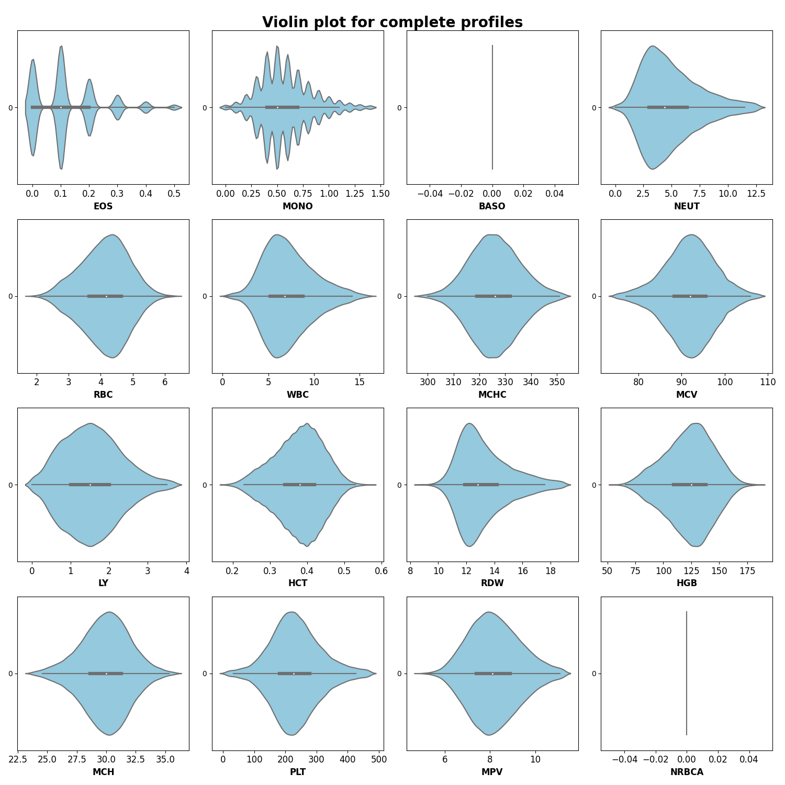
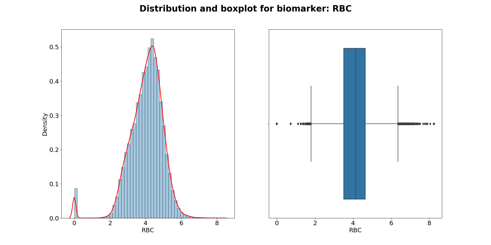
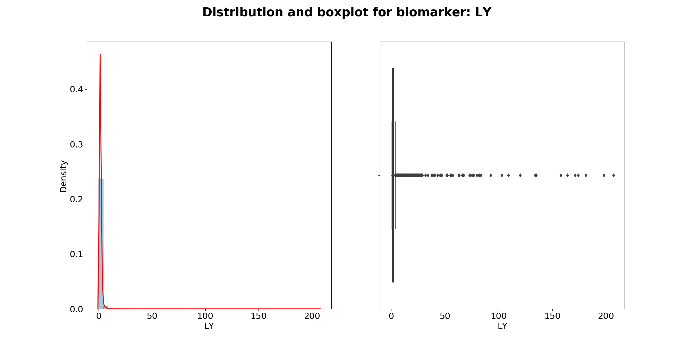

Note
Click here to download the full example code
Biomarker distributions in dataset¶
Using seaborn library to visualise biomarker distributions
Import the relevant libraries first
10 11 12 13 14 15 16 | import numpy as np
import pandas as pd
import matplotlib.pyplot as plt
import seaborn as sns
from scipy import stats
import warnings
warnings.filterwarnings("ignore")
|
Data import¶
23 24 25 26 27 28 29 30 31 32 33 | # Set relative data path and set FBC panel list
path_data = 'datasets/Transformed_First_FBC_dataset.csv'
FBC_CODES = ["EOS", "MONO", "BASO", "NEUT", "RBC", "WBC",
"MCHC", "MCV", "LY", "HCT", "RDW", "HGB",
"MCH", "PLT", "MPV", "NRBCA"]
# Read data and drop Nan _uid records
df = pd.read_csv(path_data).dropna(subset=['pid'])
df.reset_index(drop=True, inplace=True)
|
Preprocessing step: obtain FBC panel¶
40 41 42 43 | # Obtain the biomarkers DataFrame only
biomarkers_df = df[FBC_CODES].dropna(subset=FBC_CODES)
biomarkers_df_copy = biomarkers_df.copy(deep=True)
biomarkers_data = biomarkers_df.values
|
Plot distributions and histograms for each biomarker¶
50 51 52 53 54 55 56 57 58 59 60 61 62 63 64 65 66 67 | for col in biomarkers_df_copy.columns:
plt.figure(figsize=(20,10))
plt.suptitle(f'Distribution and boxplot for biomarker: {col}',
fontweight='bold', fontsize=25)
plt.subplot(1,2,1)
sns.distplot(biomarkers_df[col].values, bins=50,
kde_kws={'color': 'red','linewidth': 2, }, hist_kws={'edgecolor':'black'})
plt.xlabel(f'{col}', fontsize=18)
plt.ylabel('Density', fontsize=18)
plt.xticks(fontsize=18)
plt.yticks(fontsize=18)
plt.subplot(1,2,2)
sns.boxplot(x=biomarkers_df[col])
plt.xlabel(f'{col}', fontsize=18)
plt.xticks(fontsize=18)
plt.yticks(fontsize=18)
|

- 


- 

- 


Plot same histograms without outliers¶
74 75 76 77 78 79 80 81 82 83 84 85 86 87 88 89 90 91 92 93 94 95 96 97 98 99 100 101 102 103 104 105 | # Remove data outliers based on absolute Z-Score value < 3
#biomarkers_df[(np.abs(stats.zscore(biomarkers_df)) < 3).all(axis=1)]
# Remove values based on Q(1/3) -+ 1.5 * IQR method
q1, q3 = biomarkers_df.quantile(0.25), biomarkers_df.quantile(0.75)
IQR = q3 - q1
lower_bound = q1 - (1.5 * IQR)
upper_bound = q3 + (1.5 * IQR)
# New biomarkers dataframe with outlier values removed
biomarkers_df_wo_outliers = biomarkers_df[~((biomarkers_df < lower_bound) |
(biomarkers_df > upper_bound)).any(axis=1)]
# Plot distribution and boxplots
for col in biomarkers_df_wo_outliers.columns:
plt.figure(figsize=(20,10))
plt.suptitle(f'Distribution and boxplot for biomarker: {col}',
fontweight='bold', fontsize=25)
plt.subplot(1,2,1)
sns.distplot(biomarkers_df_wo_outliers[col].values, bins=50,
kde_kws={'color': 'red','linewidth': 2, }, hist_kws={'edgecolor':'black'})
plt.xlabel(f'{col}', fontsize=18)
plt.ylabel('Density', fontsize=18)
plt.xticks(fontsize=18)
plt.yticks(fontsize=18)
plt.subplot(1,2,2)
sns.boxplot(x=biomarkers_df_wo_outliers[col])
plt.xlabel(f'{col}', fontsize=18)
plt.xticks(fontsize=18)
plt.yticks(fontsize=18)
|

Total running time of the script: ( 0 minutes 21.676 seconds)